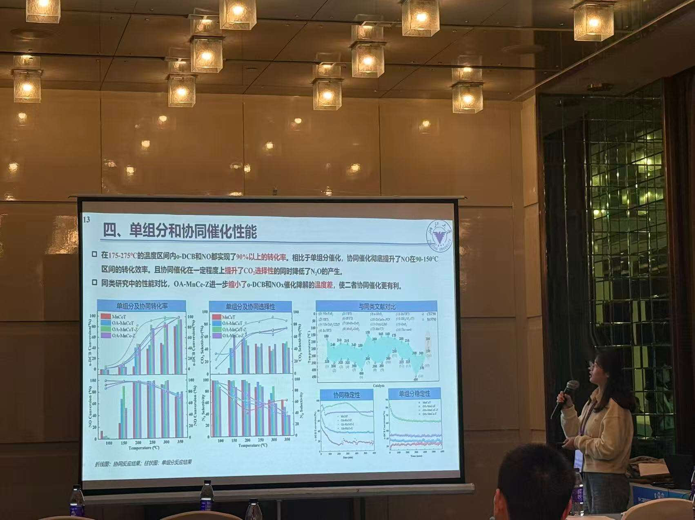
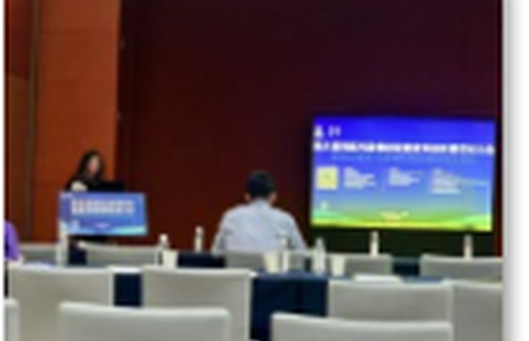
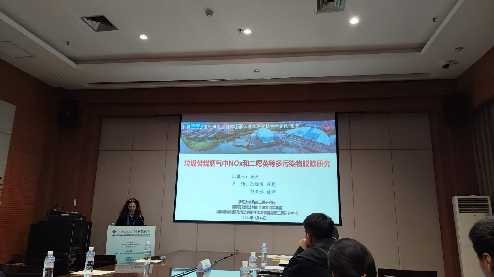
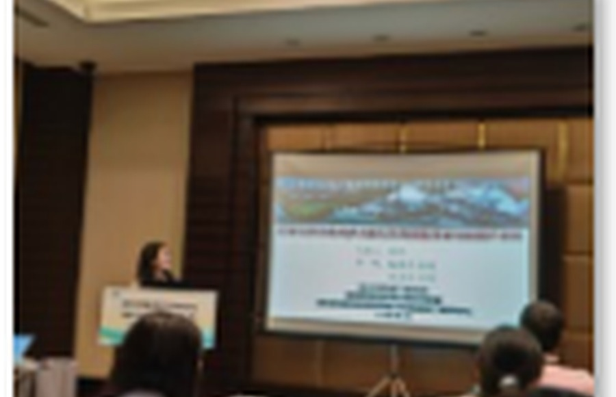

The 15th International Symposium on Catalytic Science and Technology
Oral Presentation
Guangzhou, China · November 2025
Presented research on catalytic science, dynamic reaction mechanisms, and environmental catalysis.

Oral Presentation
Guangzhou, China · November 2025
Presented research on catalytic science, dynamic reaction mechanisms, and environmental catalysis.

Oral Presentation
Chongqing, China · May 2025
Shared research on synergistic pollutant removal and catalytic reaction mechanisms.

Oral Presentation
Kunming, China · November 2024
Presented research on environmental catalytic materials and structure–activity relationships.

Oral Presentation
Guiyang, China · May 2024
Reported research progress in chlorinated-pollutant control and catalytic removal technologies.